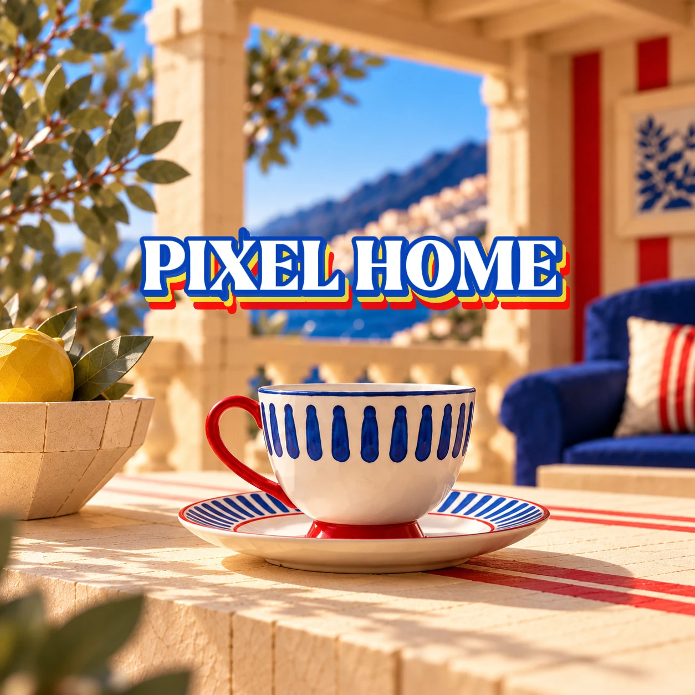
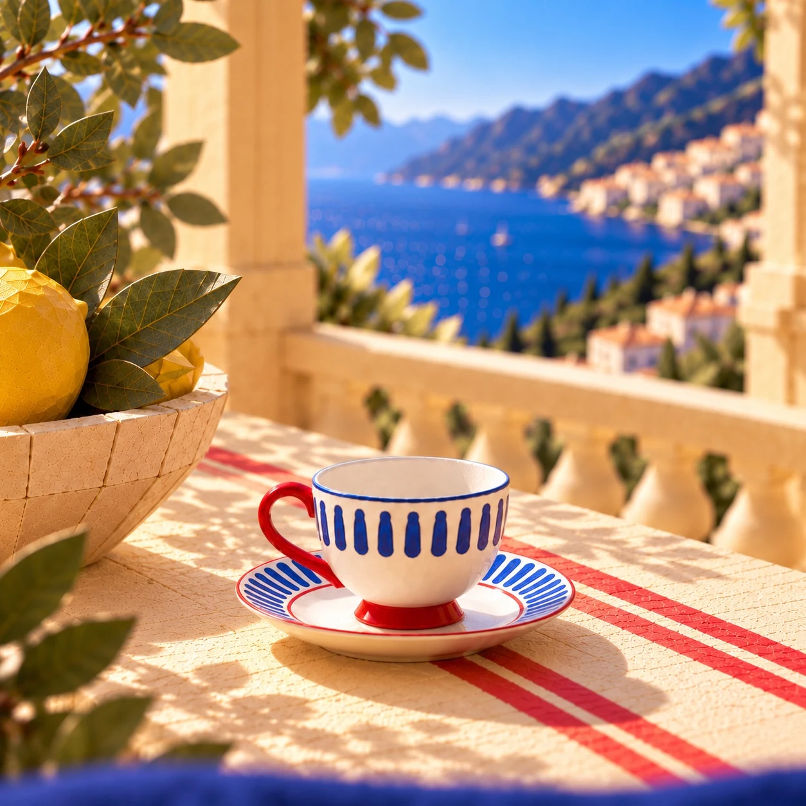
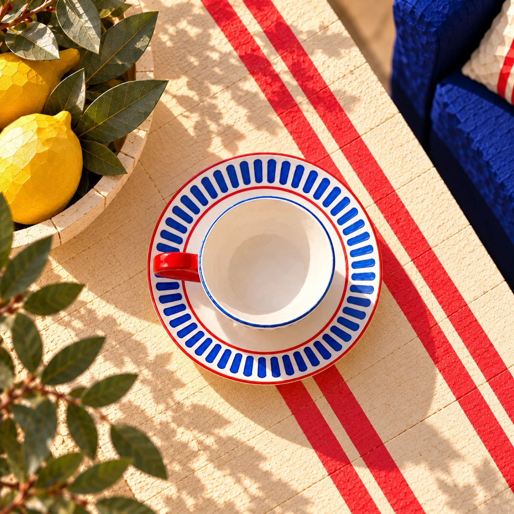
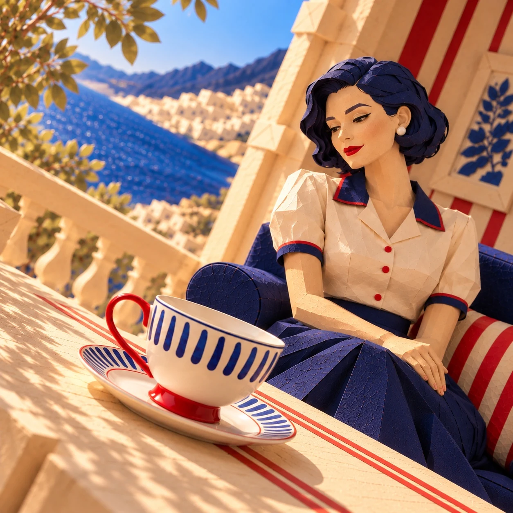
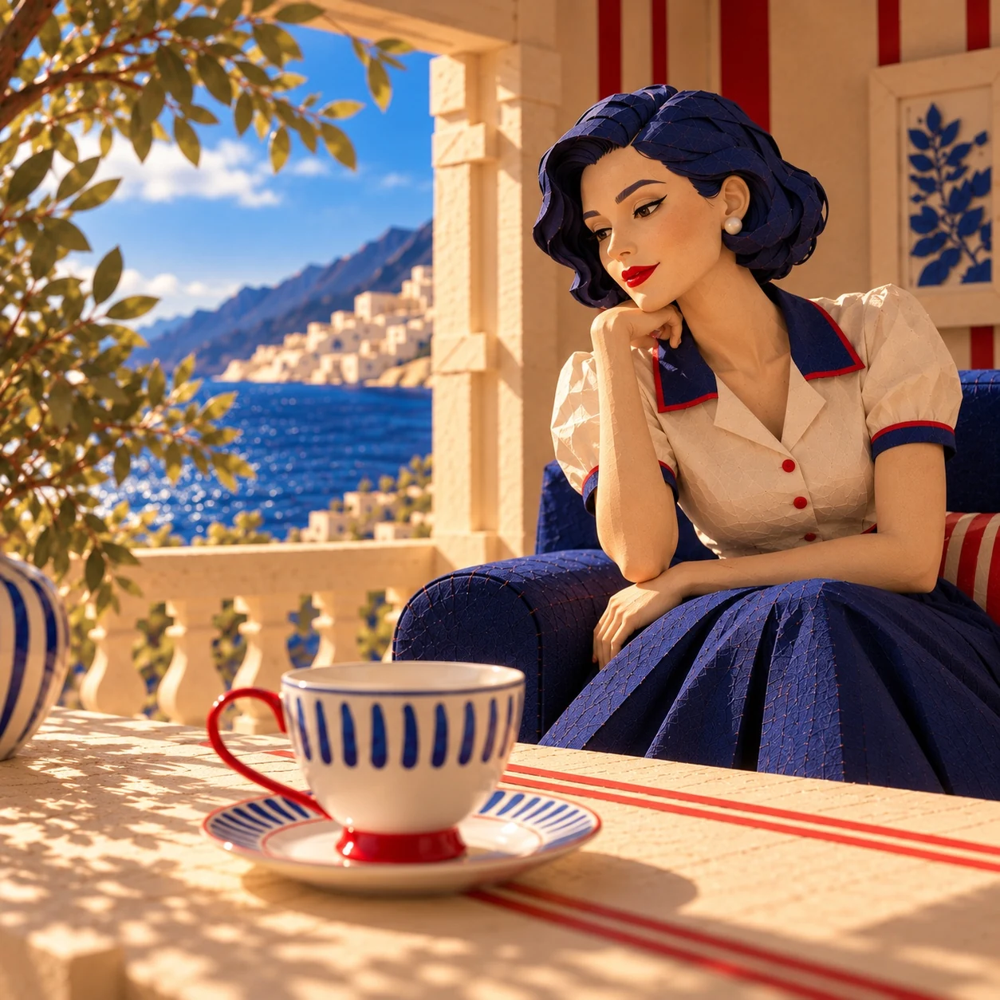

TABLEWARE / INDEPENDENT CONCEPT
A Mediterranean Tea Break
An independent AI concept featuring a retro Karaca teacup in a Mediterranean world of paper textures, blue patterns and red accents.

PROJECT FILM
A small ritual, an imagined world.
A 15-second film bringing the retro cup and its paper-textured world to life. Playback and sound are in your control.
VISUAL SERIES
One product, different perspectives.




LET'S CREATE TOGETHER
What story could we tell for your product?
An independent AI concept featuring a Karaca product · No brand collaboration.